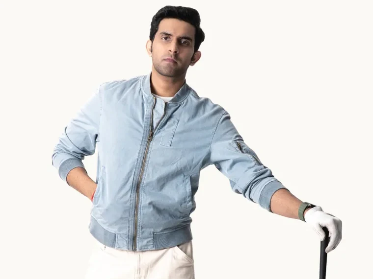
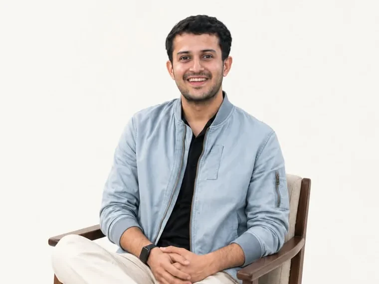

Krishn Yadav
Head of Design
Founder of JustShotYou Productions. He leads the design practice — art direction, campaigns, and how a brand is put in front of a camera.
- Photography
- Film
- Art direction
- Campaigns
We work with founders, CEOs, and executive teams to realize their most significant opportunities. Triggers like leadership changes, shifting business models, market expansions, and product innovations are perfect challenges for us. We’ll make your vision visible.
Design, marketing and technology run as three practices under one roof. Krishn, Vidant and Manish lead them — and they stay close enough to the work that the people who take your brief are the people who shape it.

Head of Design
Founder of JustShotYou Productions. He leads the design practice — art direction, campaigns, and how a brand is put in front of a camera.
Head of Marketing
He leads the media practice — buying, audiences, and the creative testing that decides where the next rupee goes.

Head of Technology
An IIIT graduate who would rather ship than talk about it. He leads the technology practice — the sites, apps and systems behind the work.